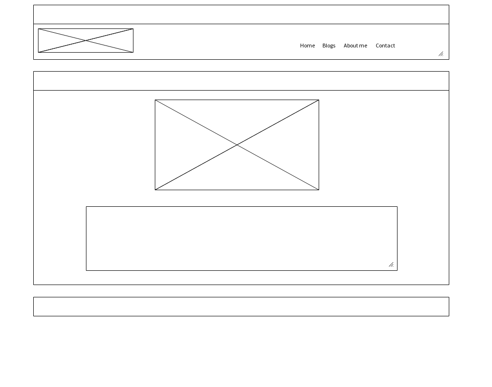

What is a responsive website, and why is responsiveness important?
A responsive website adapts its form of displaying the content to the user depending on the device being used to access the content. It is important to provide the most user friendly experience possible so the user is left with a positive impression and gets the most out of visiting the website.
What is mobile first design, and why is it important?
Designing a wesite with a mobile sized screen first is very good starting point for a web developer. If one designs a website with a mobile device in mind, it creates a simple starting point from which you can eleborate for larger screens. If you were to design a site around a pc sized screen, it would be a lot more difficult later to condense that information and try to make it fit in a device sized screen and still be user friendly and attractive.
What are frameworks, and their pros and cons?
Frameworks are predesigned bits of code and can produce different foundation structures, functions or visual effect on ones website. They can be very useful and speed up the process of creating a webpage the way you want it however it can be a big hold up in learning if you rely on frameworks t o attain the functions you want on your website.
What is a wireframe and why do we use it?
A wireframe is a simplified outline of the structure of your webpage that helps one decide on things such as dimentions and placement before putting it in code. Using this method to design your webpage can save a lot of time and frustration further down the line. One downfall if you cannot effectively test out interactive functions.
My wireframe
Aspects of my wireframes I found difficult to implement, and why.
It is difficult to convey the actual feeling of the website you are designing. I think with practice, more time and precision this may become easier.